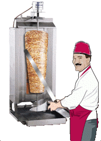

Шаурма́ (араб. شاورما, ивр. שווארמה) — ближневосточное (левантийское) блюдо из питы или лаваша, начинённого приготовленным на гриле, а затем рубленым мясом (баранина, курятина, реже — телятина, индюшатина) с добавлением специй, соусов и салата из свежих овощей[1]. В немусульманских странах может встречаться и свинина. Употребляется без использования столовых приборов. Несмотря на то, что в современных словарях русского языка встречается только вариант написания «шаурма»[2], в ряде регионов России, в зависимости от плотности расселения этнических диаспор, распространены также диалектные варианты «шаверма» и «шаварма». Согласно лингвисту Есении Павлоцки, поскольку слово «шаверма» не противоречит признакам нормы и удобнее фонетически (так как, в отличие от варианта «шаурма», не содержит стечения гласных), оно в будущем имеет шансы быть внесённым в лингвистические словари[3]. Слово "шаурма" - это арабское произношение турецкого слова çevirme [tʃeviɾˈme], означающего переворачивание, и обозначающее гриль ("Reporter", Мохаммед Н. Аль Хан; "Персонал", 31 июля 2009 г., «Шаурма: арабский фаст-фуд». Gulfnews.com.) Состав:лаваш,мясо,кетчуп,майонез,морковь,сыр,лук,огурец,помидор,капуста.
| Продукт | Заказов | Дата |
|---|---|---|
| Шаурма Маленькая | 13 | 16-23.12.2019 |
| Шаурма Средняя | 23 | |
| Шаурма Большая | 20 | |
| Шаурма Двойная | 15 | |
| Шаурма с сосиской | 6 | |
| Шаурма с фалафелем | 7 | |
| Грибы | 23 | |
| Сыр | 15 | |
| Картошка | 27 | |
| Морковка по корейски | 10 |